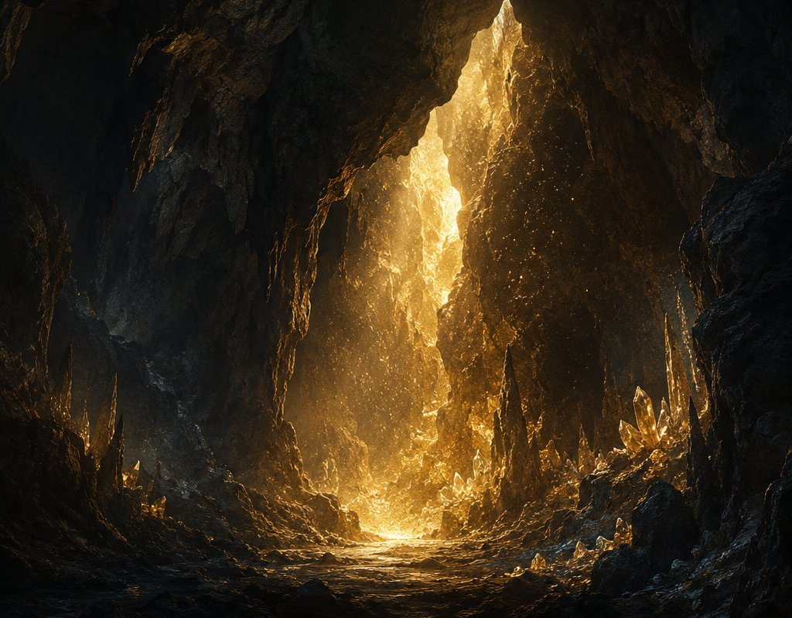
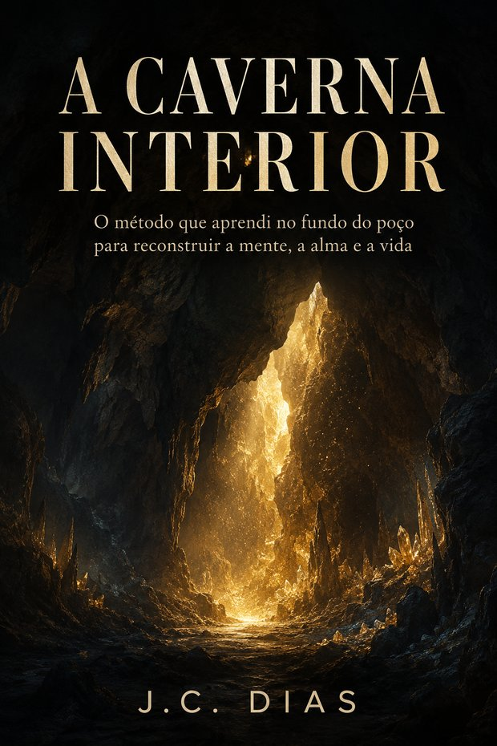

Acesso antecipado · Exclusivo para quem chegou até aqui
Os outros livros contam partes da minha jornada.
Este é o livro em que eu te mostro como consegui voltar.
A Caverna Interior
O método que aprendi no fundo do poço para reconstruir a mente, a alma e a vida.
Você chegou até aqui comigo.
Por isso, antes de abrir este livro para o público, quero permitir que você entre primeiro.
Mas este não é simplesmente o meu próximo livro.
É o livro em que a história finalmente se transforma em método.
